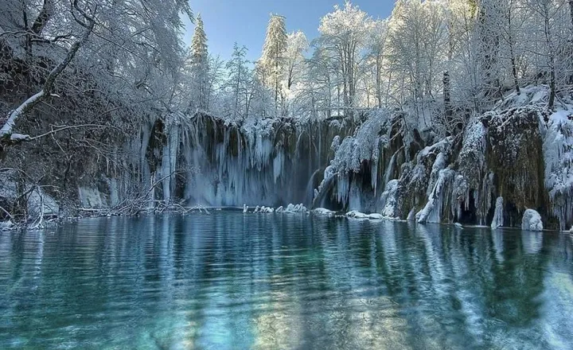

Chicago é conhecida como a Cidade dos Ventos nós acreditamos que ela se torna ainda mais bonita durante o inverno quando se transforma na Cidade da Neve.A temporada da American Hockey League e a temporada regular da NBA se estendem até os meses de inverno Ao mesmo tempo, o United Center de Chicago é o lar do Chicago Blackhawks e do Chicago Buls dois dos principais times em seus respectivos setores da indústria, portanto,você pode ter certeza de que assistir a um jogo de qualquer um dos times pode ser uma experiência extremamente divertida.
𝐏𝐚𝐫𝐪𝐮𝐞 𝐍𝐚𝐜𝐢𝐨𝐧𝐚𝐥 𝐏𝐥𝐢𝐭𝐯𝐢𝐜𝐞, 𝐂𝐫𝐨𝐚́𝐜𝐢𝐚
Imagine uma série de dezesseis lagos azul-turquesa,com água fluindo de um para o outro em forma de cascata em uma mostra inesquecível da majestade e do poder da água.Se você acha que não tem nada para fazer na Croácia no inverno, saiba que está muito enganado! Para começar, é nessa época que em muitas regiões do país costuma nevar. uma coisa é certa: ver a neve cair pela primeira vez é algo maravilhoso! Dá uma sensação de que você foi transportado para um lugar mágico. Neve também é sinônimo de diversão para o viajante, especialmente para quem nunca viveu essa experiência.

𝐏𝐚𝐫𝐪𝐮𝐞 𝐍𝐚𝐜𝐢𝐨𝐧𝐚𝐥 𝐁𝐚𝐧𝐟𝐟, 𝐂𝐚𝐧𝐚𝐝𝐚́
A atração estrelada deste parque é, sem dúvida, o Lago Moraine Passeio com raquetes de neve por Banff.A estação de Le Massif de Charlevoix, na província de Quebec, é um dos poucos lugares do mundo onde você pode esquiar entre as montanhas nevadas e um rio.Como o destino tem a maior queda vertical a leste das Montanhas Rochosas, as águas do St. Lawrence te acompanham de praticamente todas as pistas da estação